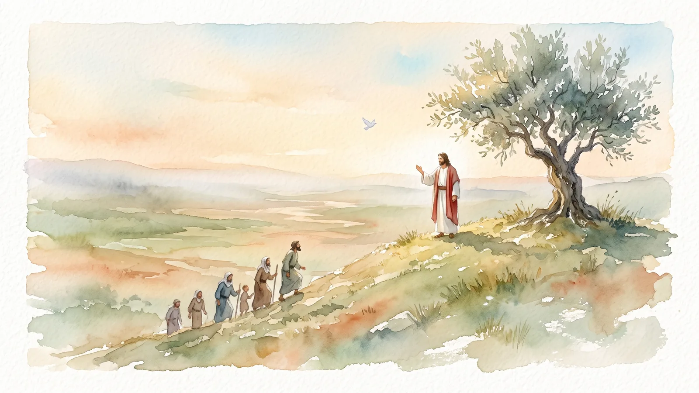
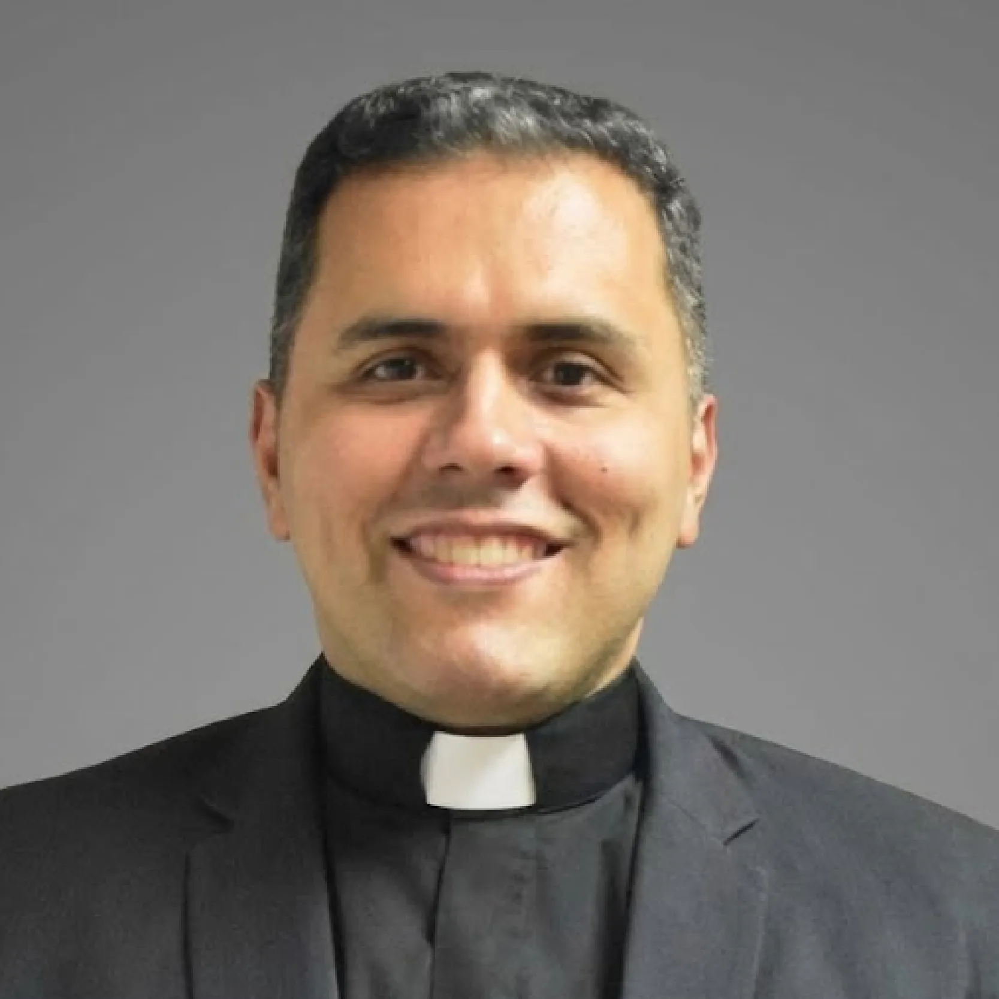

· Lc 12, 35-38
La paz no es ausencia, es plenitud
Cristo es nuestra paz: no la ausencia de guerra, sino la plenitud y la verdadera felicidad que solo él, el Príncipe de la Paz, puede darnos.

Antes de hablar de la Palabra, quiero contarles algo que me pasa en el seminario. Soy profesor allí y, cuando comienzo las clases con los nuevos seminaristas, les suelo hacer una pregunta: ¿qué es un laico? Casi siempre me responden que un laico es una persona que no ha sido ordenada sacerdote. ¿Es verdad? Sí. ¿Pero es correcto? No.
Porque en una definición no me tienes que decir lo que una cosa no es. Imagínate que yo te pregunto qué es un gato y tú me respondes: un gato no es un perro. No me has dicho lo que es; me has dicho lo que no es. Un laico es un fiel bautizado que se santifica en las realidades del mundo: en el trabajo, en la familia, en la educación, en la política. Eso sí es un laico.
¿Por qué les cuento esto? Porque hoy me llamó la atención una frase muy sencilla de la carta a los Efesios que hemos leído: «Cristo es nuestra paz» (Ef 2, 14). Paz en griego se dice eiréne, y en hebreo, shalom. Ahora bien, ¿qué es la paz?
Si se lo preguntas a la gente, te dirá más o menos lo mismo: la paz es ausencia de guerra, ausencia de conflicto. Y otra vez me estás diciendo lo que la paz no es. Si la Escritura dice que Cristo es nuestra paz, y todos queremos la paz, es muy importante preguntarnos qué es verdaderamente. La palabra shalom nos habla de plenitud. Paz no significa ausencia de guerra; paz significa plenitud, alegría, felicidad. Cuando el Señor te dice «yo te voy a dar la paz», te está diciendo: yo te voy a dar la verdadera felicidad.
El profeta Miqueas anuncia del que ha de venir: «Él será la paz» (Miq 5, 4). Y en Isaías se nos dice algo todavía más hermoso: el que viene será llamado «Príncipe de la Paz» (Is 9, 5). Jesús es el Príncipe de la Paz. ¿Y eso qué significa? Primero, que la paz es un don de Dios: la plenitud, la felicidad, la alegría, el shalom, es algo que Dios te da. Y segundo, que quien te lo da es el Príncipe de la Paz anunciado, Jesucristo. Si tú quieres ser feliz, si quieres vivir la verdadera paz que llena el corazón, tienes que pedirle a Jesús que sea él quien le dé la paz a tu corazón.
¿Cuántas veces venimos a la iglesia llenos de problemas, de preocupaciones, y queremos un poquito de paz? ¿Qué tenemos que hacer? Decirle al Príncipe de la Paz que sea él quien nos la dé. Por eso es tan hermoso lo que encontramos en el libro de los Números, la bendición de Aarón. Dios le dice a Moisés que desde entonces los sacerdotes bendecirán así al pueblo: «Que Yahvé te bendiga y te guarde; que ilumine Yahvé su rostro sobre ti y te sea propicio; que Yahvé te muestre su rostro y te conceda la paz» (Nm 6, 24-26).
Hermanos, la paz que es Cristo es un don, y por eso hay que pedirla, hay que invocarla. Hay que decirle al Señor: permíteme conocer a Jesucristo en la oración, en la Palabra, en los sacramentos, en la comunidad, para que, conociéndolo de verdad, él sea mi paz. Esa paz que el mundo no me puede quitar, porque el mundo no me la da. La misma paz de la que el Señor dijo: «Les doy mi paz» (Jn 14, 27). Que el Señor nos conceda ese don.

Pbro. Rafael VillalobosPárroco de Santa Lucía